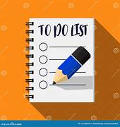

Projects
My Portfolio
"Welcome to my digital sketchbook! This portfolio is a reflection of my creative process and a showcase of my passion for web development. Explore my projects, learn about my inspirations, and discover how I approach challenges with a unique perspective and a focus on innovation, user-centered design, sustainability.
View Project

Simple To Do List App
A user-friendly application to help you organize and prioritize your tasks efficiently. Create to-do lists, set reminders, and track your progress towards achieving your goals."
View Project
Simple Attendance Management App
The Simple Attendance Management Website is designed to help teachers, managers, and administrators easily track and manage the attendance of students or employees. The system allows users to mark attendance, view attendance records.
View Project